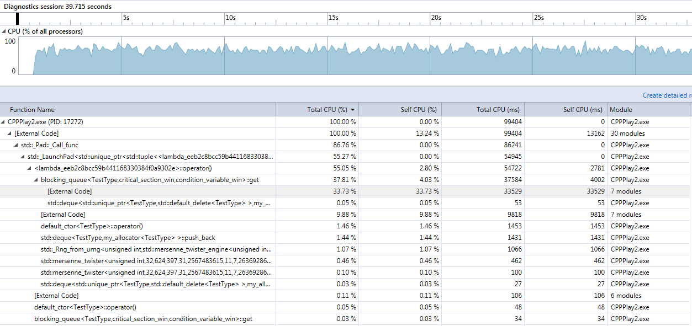
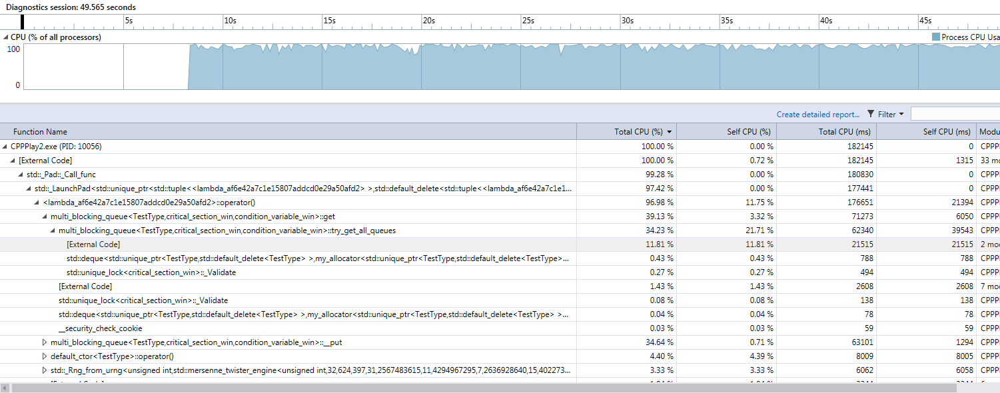
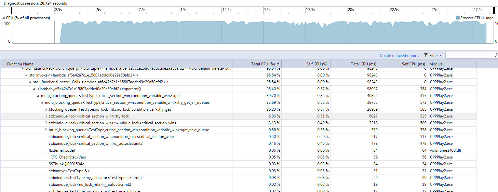
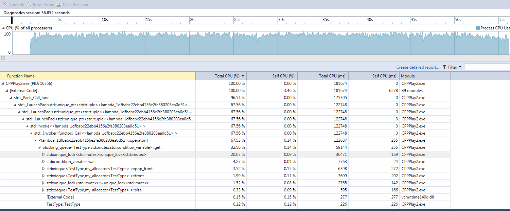

C++ Play - Multithreading (Queues)
In this post I am going to build a multithreaded queue to exemplify various issues regarding synchronization.
I am going to measure the cost of locking and thread contention and provide some ideas to improve performance.
I am going to build the tests incrementally, refining the solution as I progress through the code,
but I will also skip some steps to keep the post meaningfully short.
First, testing
In order to test the correctness of the application, I will use two types:
- A test type, defined by me, with enough weight inside to allow performance tests to have a baseline to run against (compare the time spent in locking to actual work of copying and moving the object in and out of the queue). I will name this type
TestType. :) - A
unique_ptr<TestType>to validate against the common scenario of having a pointer stored in the queue, as well as making sure the move semantics work properly.
For the TestType I am going to keep the type as simple as possible, with only move enabled, just to make sure all unnecessary copies are kept under control - deep copy errors will be found at compile time. Here is the definition:
class TestType {
public:
int arr[50]; // put some weight into the object
TestType() {
iota(arr, arr + sizeof(arr) / sizeof(int), 0);
}
~TestType() {}
TestType(const TestType& t) = delete;
TestType(TestType&& t) {
memcpy(arr, t.arr, sizeof(arr));
}
TestType& operator =(TestType&& t) {
memcpy(arr, t.arr, sizeof(arr));
return *this;
}
public:
void not_null() {
cout << "Yeey, not null?: " << hex << this << endl;
}
};
The most basic queue:
A simple multithreaded queue with all operations synchronized with a mutex. I went for some design choices from the beginning:
- I wanted be able to use various synchronization primitives as long as they respect the
std::mutexandstd::condition_variableinterface. I wanted to be to play around and alter the default behavior. - I wanted to be able to track memory allocations. My initial assumption was that optimizing memory allocations will play a significant part in the process of streamlining the queue. Therefore I built my own allocator, which simply wraps
mallocandfree. More on this later. - I wanted a very straight-forward interface, encapsulating all the behavior.
template<typename T, typename mtx_type, typename cond_variable_type> class blocking_queue {
private:
std::deque<T, my_allocator<T>> _deque;
mtx_type mtx;
cond_variable_type cv;
public:
blocking_queue() { }
blocking_queue(blocking_queue&& other) : _deque(move(other._deque)) { }
blocking_queue(const blocking_queue& other) = delete;
T get() {
std::unique_lock<mtx_type> lock(mtx);
while (_deque.size() == 0)
cv.wait(lock);
T t = move(_deque.front()); _deque.pop_front();
return move(t);
}
void put(T&& t) {
std::unique_lock<mtx_type> lock(mtx);
_deque.push_back(move(t));
cv.notify_one();
}
void put(const T& t) {
std::unique_lock<mtx_type> lock(mtx);
_deque.push_back(t);
cv.notify_one();
}
bool try_get(char uninitialized[sizeof(T)]) {
std::unique_lock<mtx_type> lock(mtx);
if (_deque.size() > 0) {
new (uninitialized) T(move(_deque.front()));
_deque.pop_front();
return true;
}
return false;
}
bool try_get(T& out) {
std::unique_lock<mtx_type> lock(mtx);
if (_deque.size() > 0) {
out = move(_deque.front());
_deque.pop_front();
return true;
}
return false;
}
};
Design considerations:
- I specifically omited a method
size()to return the numer of elements in the queue. Being in a multithreaded context, this method would not make much sense. - Replacement for the method
size()is thetry_get()which will lock the queue and atomically return an element if one exists. This design will have further implications down the stream, when I will use the queue in a multi-queue configuration and I will be forced to use external locking to obtain the minimum contention. The other option would have been an implementation that follows the patterntry_lockthenif(size() > 0) return element;but in this case there would have been no hint on the actual size of the queue. So being in doubt on the best design, I kept locking external in the multi-queue and preserved the method as it is. - I added two
try_gets. One of them accepts a stack allocated block of memory as input parameter to hint to the caller to avoid default-constructing the receiving object of typeT. The method will invoke the move constructor itself on that memory.
Testing
- Very basic tests, just to make sure data isn't lost on transfer between the callers and the queue.
void test_basic_bq() {
typedef blocking_queue<unique_ptr<TestType>,
std::mutex,
std::condition_variable> MutexBlockingQueue;
{
MutexBlockingQueue bq;
auto p = make_unique<TestType>();
p->not_null();
bq.put(move(p));
p->not_null();
p = bq.get();
p->not_null();
}
{
MutexBlockingQueue b;
b.put(make_unique<TestType>());
MutexBlockingQueue bq = move(b);
}
}
- Multithreading tests:
Aim is to combine in a simple manner various parameters. Here is an example of a possible main function:
int main()
{
test_basic_bq();
test_mt_bq<blocking_queue, TestType>(0);
test_mt_bq<blocking_queue, unique_ptr<TestType>>(0);
test_mt_bq<blocking_queue, TestType, std::mutex, std::condition_variable>(0);
test_mt_bq<multi_blocking_queue, TestType>();
return 0;
}
I am instatiating the test_mt_bq with various parameters:
- Simple blocking queue (the one I spoke about before) with
TestType- default it uses windows critical sections as synchronization mechanism (see below) - Simple blocking queue with
unique_ptr<TestType> - Simple blocking queue with
std::mutexandstd::condition_variable - Multi-queue blocking queue with default synchronization (windows critical sections) and
TestType
Below is the test function:
template<template<class...> class QueueType,
typename TT,
typename mtx_type = critical_section_win,
typename cond_variable_type = condition_variable_win,
typename TT_ctor = default_ctor<TT>>
void test_mt_bq(int LOOP_CNT = 10000000,
int MAX_THREADS = std::thread::hardware_concurrency()) {
std::vector<std::thread> threads;
QueueType<TT, mtx_type, cond_variable_type> queue;
std::atomic<int> elems = 0;
std::atomic<int> running_threads = 0;
for (int ix = 0; ix < MAX_THREADS; ix++) {
running_threads++;
threads.push_back(std::thread([&]() {
auto my_rand = std::bind(std::uniform_int_distribution<int>(0, RAND_MAX),
default_random_engine(ix));
for (int i = 0; i < LOOP_CNT; i++) {
if (my_rand() % 2) {
queue.put(TT_ctor()());
elems++;
}
else {
elems--;
queue.get();
}
}
running_threads--;
}));
}
// watchdog
running_threads++;
threads.push_back(std::thread([&]() {
while (running_threads.load() > 1) {
while (elems.load() <= 0) {
queue.put(TT_ctor()());
elems++;
}
this_thread::yield();
}
running_threads--;
}));
auto last_consumer = std::thread([&running_threads, &elems, &queue]() {
while (running_threads.load() > 0 || elems.load() > 0) {
while (elems.load() > 0) {
queue.get();
elems--;
}
this_thread::yield();
}
});
std::for_each(threads.begin(), threads.end(), [](auto &th) {
th.join();
});
// just make sure there is at least one element to consume, so the thread above does not block.
elems++;
queue.put(TT_ctor()());
last_consumer.join();
}
This functio has several parts:
- It creates MAX_THREADS which randomly produce and consume events from the queue
- It creates a watchdog thread to make sure the MAX_THREADS do not all starve and lock
- It creates a consumer thread just to make sure the queue does not grow too much.
Initially I have started without this consumer thread and I realized that, at the function exit, there are around 3000 unconsumed elements in the queue when considering 1000000 loops in each of the MAX_THREADS (monitored in the elems variable)
Results from the simple queue testing:
- Around 80% of the time it spends in the
mutex::lockfunction, in kernel. Optimizing the amount of locking brings by far the biggest performance improvements (I used Visual Studio performance analysis tools). - The
std::mutexdoes, by default, more spinning than the defaults in WindowsCRITICAL_SECTION. When using thestd::mutex, the CPU goes to 100% and the system becomes almost unresponsive. When using the WindowsCRITICAL_SECTION, with the default spin count, the CPU stays at around 70% (configuration: 4 cores, MAX_THREADS = 4, nolast_consumerthread). - For 1000000 loops, the amount of memory allocations is about 2500. The
std::dequeis very memory stable and reuses very nicely the memory already allocated on repeatedpop_front,push_back.
Here is the Windows CRITIAL_SECTION and CONDITION_VARIABLE implementation of the synchronization interface:
class critical_section_win {
private:
CRITICAL_SECTION cs;
public:
friend class condition_variable_win;
std::atomic<int> lk_cnt = 0;
public:
critical_section_win() {
// ::InitializeCriticalSectionAndSpinCount(&cs, 0);
::InitializeCriticalSection(&cs); // leave the spin count as it is; test the defaults
}
~critical_section_win() {
::DeleteCriticalSection(&cs);
}
critical_section_win(const critical_section_win& csw) = delete;
critical_section_win(critical_section_win&& csw) = delete; // TODO: move
bool try_lock() {
int k = 0;
if (!lk_cnt.compare_exchange_strong(k, 1) )
return false;
if (!TryEnterCriticalSection(&cs)) {
lk_cnt--;
return false;
}
return true;
}
void lock() {
lk_cnt++;
EnterCriticalSection(&cs);
}
void unlock() {
LeaveCriticalSection(&cs);
lk_cnt--;
}
};
class condition_variable_win {
private:
CONDITION_VARIABLE cv;
public:
condition_variable_win() {
InitializeConditionVariable(&cv);
}
condition_variable_win(const condition_variable_win& csw) = delete;
condition_variable_win(condition_variable_win&& csw) = delete; // TODO: move
~condition_variable_win() {
// TODO: defensive programming - test for locked threads
}
void notify_all() {
WakeAllConditionVariable(&cv);
}
void notify_one() {
WakeConditionVariable(&cv);
}
void wait(const std::unique_lock<critical_section_win>& csw) {
SleepConditionVariableCS(&cv, &csw.mutex()->cs, INFINITE);
}
template<class R, class P>
cv_status wait_for(const unique_lock<critical_section_win>& csw,
const chrono::duration<R, P>& duration) {
DWORD ms = static_cast<DWORD>(
chrono::duration_cast<chrono::milliseconds>(duration).count());
if (!SleepConditionVariableCS(&cv, &csw.mutex()->cs, ms)) {
return cv_status::timeout;
}
return cv_status::no_timeout;
}
};
Multi-queue blocking queue:
So the main optimization has to do with locking. The simplest way to achieve it is to have a multi-queue implemented as a collection of several other queues and try_lock each of them one by one, until the ownership is obtained. In case the ownership cannot be acquired, simply move to the next. With 4 queues and a spin count of 2 (try locking twice all the queues before forcibly locking one of them), the total amount of time spent in synchronization in external code becomes trivial. mutex::lock completely loses its predominant status in the list of CPU spent-time and is replaced by other functions like accessing the internal std::deque or inserting a new element in it (get, put).
Here is the code:
template<typename T, typename mtx_type, typename cond_variable_type>
class multi_blocking_queue {
private:
static const int QUEUES = 4;
static const int SPIN_COUNT = 2;
mtx_type mtx[QUEUES];
mtx_type mtx_block;
cond_variable_type cv;
blocking_queue<T, no_lock_mtx, no_lock_condition_var> _queues[QUEUES];
public:
multi_blocking_queue() {}
// round robin for better filling of queues -
// do not allow elements to remain for too long in one queue
int get_next_queue() {
static thread_local int i = 0;
return i = ((i++) % QUEUES);
}
bool try_get_all_queues(char unallocated[sizeof(T)]) {
for (int i = 0; i < QUEUES; i++) {
int q = get_next_queue();
unique_lock<mtx_type> lk(mtx[q], std::defer_lock);
if (lk.try_lock() && _queues[q].try_get(unallocated))
return true;
}
return false;
}
T get() {
char stack_alloc[sizeof(T)];
// do not call constructor here.
T* ret = reinterpret_cast<T*>(stack_alloc);
while (true) {
for (int sp = 0; sp < SPIN_COUNT; sp++)
if (try_get_all_queues(stack_alloc))
return move(*ret);
unique_lock<mtx_type> lk(mtx_block);
if (try_get_all_queues(stack_alloc))
return move(*ret);
cv.wait(lk);
}
}
bool try_put_all_queues(T&& t) {
for (int i = 0; i < QUEUES; i++) {
int q = get_next_queue();
unique_lock<mtx_type> lk(mtx[q], std::defer_lock);
if (lk.try_lock()) {
_queues[q].put(move(t));
return true;
}
}
return false;
}
void put(T&& t) {
__put(move(t));
cv.notify_one();
}
void __put(T&& t) {
for (int sp = 0; sp < SPIN_COUNT; sp++) {
if (try_put_all_queues(move(t)))
return;
}
{
unique_lock<mtx_type> lk_block(mtx_block);
while (!try_put_all_queues(move(t)));
}
}
};
Notes on the implementation:
- To keep the
try_locksemantic as described for theblocking_queue, I had to trick the underlyingblocking_queuesinto no locking. For this specific purpose I have created two clases:
class no_lock_mtx {
public:
void lock() {}
void unlock() {}
};
class no_lock_condition_var {
public:
void notify_all() {}
void notify_one() {}
void wait(const std::unique_lock<critical_section_win>& csw) {}
};
and passed them as synchronization primitives to the underlying blocking_queues. As mentioned before, this was a design choice, to keep try_get method return false only if the size of the underlying std::deque is 0.
-
get_next_queueis used to loop through the list of blocking_queues instead of simply starting each time from 0. This is to ballance the queues and not let elements lost too long in queues with numbers 1->4. In most of the cases locking is possible on queue no. 0, thus the rest of the queues are used less often, resulting in an unbalanced response: some elements will be postponed very much ongetif the implementation does not use the queues in a round-robin fashion. -
try_lockfromCONDITION_VARIABLEuses a very simple atomic flag to quickly return if the ownership is taken. The flag is just a hint which is good enough and is not worth CPU cycles to remove the race condition between the checking of the flag and theTryEnterCriticalSectioncall.
Conclusions:
In the following pictures I am only looking at the get function. Please note that the put has very similar characteristics.

Blocking queue with CRITICAL_SECTION synchronization in release mode
33.73% of CPU time (get function) spent in external code. Only 4% spent in own code, which includes the pushing / popping from the queue.
Together with a similar percentage in the put function, adds up to about 70% of the time our process in running it spends in code external to our app (mostly synchronization, to be seen below in the debug capture).
Also noticeable is that CPUs are used to about 70% of their capacity - here we run CRITICAL_SECTION syncrhronization, not the std::mutex.

Multi queue with CRITICAL_SECTION synchronization in release mode
Looking at the same get function, only about 12% spent is spent in external code with 21% spent in own code. However, unlike the blocking queue, this 21% also includes active waiting while finding the queue to read to. A clearer breakdown in the debug trace.
We also notice a much better usage of the CPU, which stays at almost 100%.
A direct comparison of the CPU time spent might be misleading though. We notice that on 10 million loops per thread, the multi_blocking_queue finishes in approx 25 seconds (on my 6 cores AMD Athlon FX) while the blocking_queue takes more than 1 minute and 35 seconds to finish.

Multi queue in debug
In the get method, only around 6% spent in trying to actively obtain the lock on the thread. Most of the time, 26%, is spent in dequeuing from the underlying list. Real performance is measured on release, where the queue and all the own code is optimized by the compiler. The debug is just for hints on where the bottlenecks may occur.

Single queue in debug, with std::mutex
Notice the CPU usage of 90+% and the large amount of time spent in trying to obtain the lock. From this measurement is clear that the std::mutex implementation does more spinning before reaching to the kernel than the CRITICAL_SECTION implementation with the default spin count.
In short:
- A multi queue gives a significant performance improvement by reducing thread contention.
- In some conditions, using the Windows
CRITICAL_SECTIONoverstd::thread mightimprove system responsiveness at the expense of slightly longer execution times. - Performance monitoring tools from Visual Studio 2015 and 2017 are really nice. :)
std::dequedoes an awesome job at reducing the number of memory allocation calls, even in cases of high dynamism (lots of pushes and lots of pops)- The code might seem long, but getting to it was a process of continuous small steps, iterative, improvements, followed by testing and continuous refactoring.
- My initial assumptions were partly wrong. I was expecting memory allocation to be a much higher performance problem than it was.
- Thread contention and locking, if not performed properly, can dramatically affect performance. However, I would advise incremental development: first a system that works correctly, then incrementally find ways to reduce locking while keeping the system running without crashes caused by race conditions, invalid data or deadlocks.